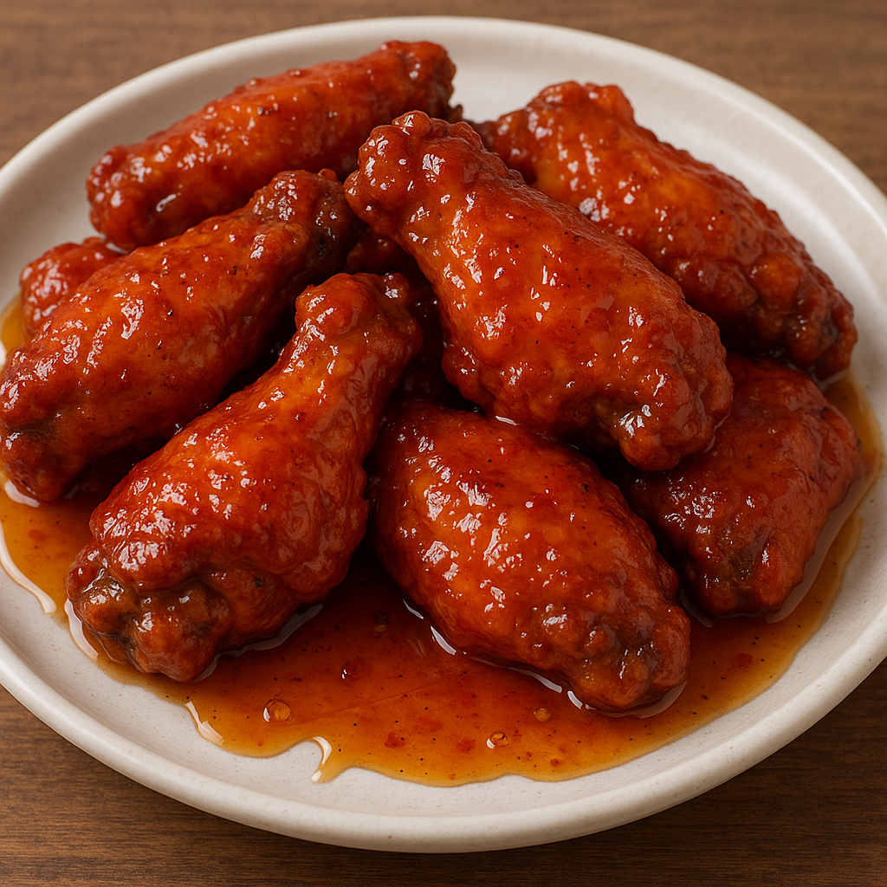

Home
Buffalo Wings

Honey styled buffalo wings
Honey Buffalo Wings are a crispy, juicy bite that perfectly combines sweet, spicy, and tangy flavors. After being baked or fried until golden and crunchy, the wings are tossed in a glossy sauce that is made with butter, hot sauce, and a lot of honey. The honey produces a sticky coating that adheres to every wing curve and tempers the heat of the Buffalo sauce with a smooth, caramel-like sweetness. These hot wings, which are frequently served with celery sticks and ranch or blue cheese dressing on the side, offer a delectable blend of flavors and textures that make them a crowd favorite.
Prep time: 10 min • Cook time: 25–30 min • Total: ~40 min
Ingredients
- 1 kg (2.2 lbs) chicken wings, split into drumettes and wingettes
- 1 tsp salt
- ½ tsp black pepper
- 1 tsp garlic powder (optional)
- 2 tbsp cornstarch or baking powder (for crispiness)
- Oil for frying (or use an air fryer/oven)
For the buffalo sauce:
- ½ cup (115 g) unsalted butter
- ½ cup (120 ml) hot sauce (Frank’s RedHot is traditional)
- 1 tbsp white vinegar
- ½ tsp Worcestershire sauce
- 1 tsp sugar or honey (optional, for balance)
Steps
- Prep the wings
- Pat the chicken wings very dry with paper towels — this is key for crispiness. Season with salt, pepper, and garlic powder. Toss in cornstarch or baking powder to lightly coat.
- Choose your cooking method:
- Deep-fry (crispiest): Heat oil in a deep pot to 175 °C (350 °F). Fry wings in batches for 8–10 minutes until golden and cooked through.
- Oven-bake: Preheat oven to 220 °C (425 °F). Arrange wings on a wire rack over a baking tray. Bake 20–25 minutes, flipping halfway.
- Air fry: 200 °C (400 °F) for 20–25 minutes, shaking or flipping halfway.
- Make the buffalo sauce
- In a saucepan over low heat, melt the butter. Whisk in hot sauce, vinegar, Worcestershire sauce, and sugar/honey if using. Heat gently until smooth — do not boil.
- Coat the wings
- Once the wings are cooked and crispy, place them in a large bowl. Pour the warm Buffalo sauce over them and toss until evenly coated.
- Serve
- Serve immediately with celery sticks and a side of ranch or blue cheese dressing.
Tips and Variations
- Extra crispy oven method: Chill the seasoned, coated wings uncovered in the fridge for at least 1 hour before baking.
- For spicier wings, add cayenne pepper to the sauce.
- For a milder version, reduce the hot sauce to ⅓ cup and increase butter slightly.